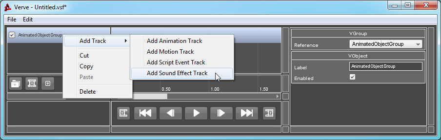
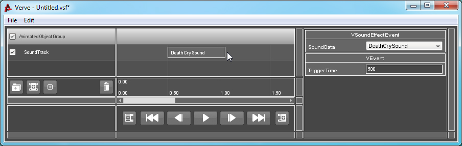

Tutorial : Sound Effect
Objects: VSoundEffectTrack, VSoundEffectEvent
A Sound Event will start playing a sound effect upon triggering. The sound that is to be played is defined by the "SoundData" property. This property must reference a valid SFXProfile object. If this object is missing or invalid, no sound effect will play.
Sound effects which play as a result of a VSoundEffectEvent will be adjusted so that the correct position and pitch are applied. Other properties, like volume, streaming or 2D/3D must be set on the SFXProfile or SFXDescription object and aren't configurable via Sound Effect Tracks or Events.
If you are creating a sequence to play in a multi-player game, Pausing and Resuming the root Controller will not affect sound effect playback on networked clients. Sound Effects are replicated on each client using NetEvents and are not controllable after creation.
How to Use:
Right-Click on your Group, go to "Add Track" and select "Add Sound Effect Track".

Right-Click on the Track and select "Add Event".
Select the newly created Event. The Property List window will refresh and inspect the Event. Change the "SoundData" property to the name of the SFXProfile you wish to have played upon triggering.
